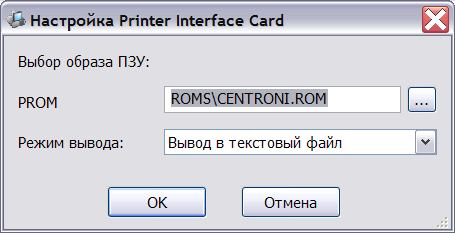
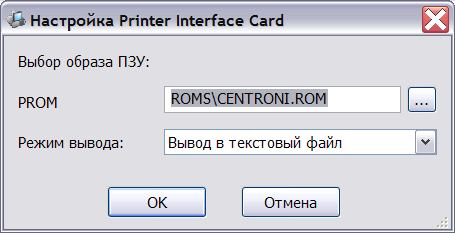
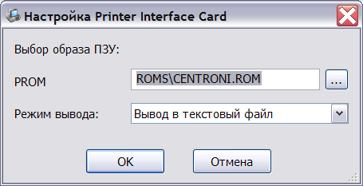
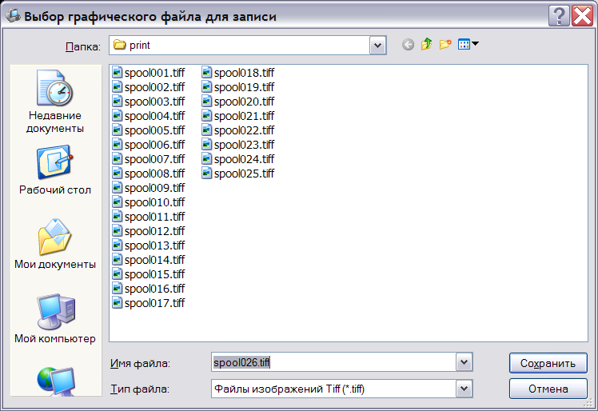
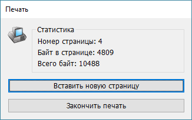
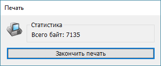

Эмулятор включает в свой состав поддержку двух типов интерфейса принтера: ячейки принтера Centronics для компьютера Apple ][ и ячейки принтера для Агат-9. Оба модуля содержат встроенную поддержку эмуляции принтера Epson FX-85 для расширенной обработки выводимой информации.
Эти ячейки незначительно отличаются в составе настроек (т.к. ячейка для Агат-9 содержит расширенное ПЗУ объёмом 2Кбайта):

Основная настройка модуля принтера заключается в указании режима вывода данных. Поддерживаются следующие режимы:
Активизация модуля производится автоматически в поддерживающих его программах (например, Агат-Автор), либо вручную командой PR#n, где n - номер слота.
При запуске печати открывается окно выбора файла (тип файла выбирается в зависимости от настроек модуля):

По умолчанию файлы печати размещаются в подкаталоге print каталога эмулятора.
Если в окне выбора печати нажать "Отмена", вывод данных будет временно отключен, до завершения текущего сеанса печати.
При печати в файл TIFF и на принтер Windows эмулятор выводит дополнительное окно, которое отображает информацию о прогрессе печати: номере текущей страницы, количестве байт, отправленных на принтер в пределах текущей страницы, и общем количестве отправленных на принтер данных. Кроме того, отображаются две кнопки: "Вставить новую страницу" и "Закончить печать."
 
Кнопка "Вставить новую страницу" необходима потому, что программы печати для Агата не рассчитаны на автоматическую подачу бумаги и не посылают никаких специальных команд на принтер для перевода страницы. Они рассчитывают, что пользователь сам увидит, что страница отпечатана, и вставит новый лист вручную. "Вставить новую страницу" позволяет эмулировать ручную подачу бумаги. Судить о том, закончилась ли печать текущей страницы, можно по поведению эмулируемой программы. Например, ТОР после печати каждой страницы отображает диалог "Вставьте следующую страницу," а когда печать полностью завершена, появляется возможность перемещать курсор по меню печати. Кроме того, во время передачи данных на принтер мигает иконка в окне информации, а счетчики переданных данных увеличиваются.
Кнопка "Закончить печать" нужна для того, чтобы закончить печать последней страницы, освободить системные ресурсы и спрятать окно прогресса. Кроме того, при печати в TIFF "Закончить печать" завершает формирование многостраничного TIFF-документа.
При печати в текстовый файл и в файл без обработки выводится упрощённое окно прогресса, которое содержит только общее количество отправленных на принтер данных и кнопку "Закончить печать." В этих форматах ручное управление страницами не требуется.
Наконец, при прямой печати на параллельный порт компьютера никаких диалоговых окон не выводится. Управление портом происходит автоматически, а замена страниц – так, как если бы к принтеру был подключён реальный Агат.
См. также: Изменение конфигурации, Описание и настройка устройств, Поддерживаемое оборудование, Главное меню